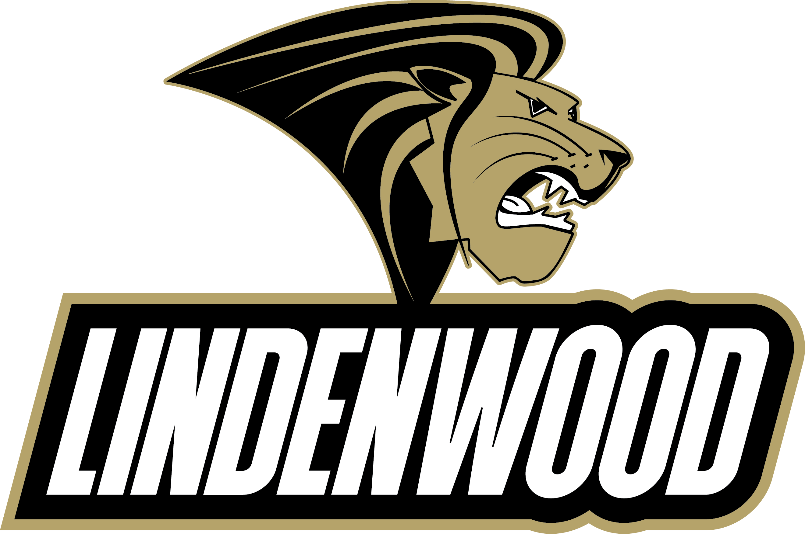
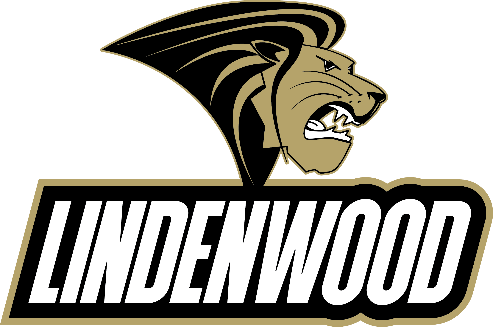

Washington University in St. Louis
This was the most expensive and prestigious university I looked at by a long shot, and there was nothing even close to its price tag that I even considered. I applied pretty late in the application season, but eventually, I was able to submit the application. I planned a visit to the campus fairly close to this date, although I don't recall exactly when I visited or when I submitted the application. During the visit was the first time I realized that, maybe, it wasn't the right place for me. The campus felt like it was separated into two completely separate sections: the education buildings and the student housing. While it made sense it practice, it just felt weird to me because each area felt entirely different from the other and it seemed like a longer walk between the two than it was. Maybe the tunnel separating the two made it feel odd. The lack of condience regarding whether I would be happy at Washington University, combined with the insane price tag of the university, convinced me quickly that it wouldn't be the best decision to go there, and that it would probably be better to look elsewhere. I'm very glad, though, that I got the opportunity to look at Washington University in person because it made me rethink why I was interested in going there. The Ivy League style of the buildings was very intimidating and definitely played a factor in my decision-making process.


Lindenwood University
With Lindenwood, I had a much different experience than I did with Washington University. It was one of the first schools I applied to and I never truly visited the campus. Through CAPS, I had heard about Lindenwood's Computer Science program and got to experience it a bit while I was there with other students in the Technology Solutions strand of the CAPS Program. While that was a fun experience at Lindenwood, I wasn't really convinced that I wanted to go there to study computer science. I don't know what it was about Lindenwood, but I just didn't feel it while I was there, and it didn't make me think I really wanted to go to Lindenwood. I honestly, to this day, still have no clue exactly what it was that convinced me to look at other places. Maybe it's just that I had already found options that I thought were better, or maybe it felt loo much like it was in the middle of a large town and it seemed overwhelming. I have no idea, but I decided that it would be best to look elsewhere.
 

Maryville University
Maryville was an interesting experience to say the least. I had heard a good amount about their computer science program and thought that it might be a good choice to go there. I wasn't fully convinced though, so after I applied to the school, I decided it would be best to visit the campus in person and receive a tour. I was able to get a tour of the campus when the weather was very nice, which was great because I hadn't really been able to get that on any of my tours so far. The campus impressive, very modern-looking, and it felt like it was very cool to walk through. It really felt like a place that would put a lot of emphasis on their computer science program. But when I talked to a professor within the computer science department, I simply didn't like what I was hearing. The professor said multiple things I didn't like, including that no one had made it far enough into the program to complete a Capstone Project because it hadn't been around for long enough, and that they were trying a different style of learning that they thought would be more beneficial for their students. While the second part sounded interesting, I was not interested in joining a computer science program that was not established in any capacity. The entire school seemed like it was an experiment set up to potentially improve college education, and while it sounds like I could benefit from it, I didn't want to take the risk that it wasn't what I would expect it to be, so after the visit, I quickly decided that it wasn't the school for me.

Webster University
I was less interested in Webster University than I was in Maryville, yet I decided to visit them on the same day to make sure that I could compare the two to each other and only miss one day of school to take advantage of campus visit days. I talked with Webster's computer science department and went on a tour of the campus in the morning before Maryville and I found that it was a very intersting place. It felt much more remote due to the sheer amount of trees everywhere throughout the campus region, and it was much more spread out because most of the buildings were a single story and they were practically in the middle of a neighborhood. It felt very home-y, but at the same time, it really didn't feel like somewhere I wanted to be all the time. They continually talked about how they gave students opportunities to study abroad and how they had campuses all around the globe to help give people those opportunities. It was the only characteristic that seemed to set them apart from other universities and make them special, but that is actually something I'm not very interested in. I didn't think anything much of their computer science program and quickly decided to not even apply to Webster.

University of Illinois Urbana-Champaign
UIUC is a school I was not looking much into until late in the admissions process. I was surprised late in 2022 when somebody told me UIUC was rated as one of the top five universities in the entire nation for computer science, rated higher than many Ivy League schools and STEM-focused colleges. Somehow, I didn't realize that up to this point, and decided immediately that I needed to apply there and visit the university. When I went to the campus, I was fairly impressed with the look of the whole area, and it felt fairly welcoming even though it was very cold outside at the time. It was not a good day weather-wise, but I got a solid tour of a large portion of the campus, which was the largest one I had visited so far. It was a massive area, and I realized that it might not be the best college for me, since I am not much of a social butterfly and tend to avoid large crowds. I learned a lot about how they managed their computer science program and I liked what I was hearing, and I really thought that I might get the best computer science education at this university. But I was born into a Mizzou family and I think it would have really hurt to go to the main campus of the University of Illinois. At least it wasn't Kansas. Also, I found out very late that I was not accepted into the university, which may have had to do with my qualifications, the strength of the application class, and/or how late I actually sent in my application. That made my decision there much easier.

Truman State University
Truman State University was the first school I applied to and was accepted to. I visited the campus briefly over the summer, outside of the school year, and it was a very different experience than it would have been otherwise. It felt like a practice run for the real thing at many other universities later. I got to simply look around at the campus area, which my parents had both been around for a long time since they both attended there for their Bachelor's Degree. They were excited I considered it and I felt fairly comfortable there on campus, but for some reason, I didn't feel so sure about it. Maybe it was the long, three-hour drive it took to get there, or maybe it was the dreary weather that day, or it's even possible it was the silence of the campus outside of the school year. Something just felt off to me, and I eventually had to go back for a second visit to the campus. When I went back there, the weather wasn't much nicer, but there was at least a lot of students on campus for their classes and I was able to hear about some people's experiences there at Truman. Something that I initially thought of as a benefit, but eventually decided may not be the most beneficial for me in the long run, was that they were a liberal arts school and would teach me a variety of other skills outside of my major. I came to view this more as a drawback and think that I should remain focused primarily on my major and area of study because that help me more in the long run.


Missouri University of Science and Technology
Near the end of sophomore year, I was already certain that I wanted to study computer science in college. They specialize in teaching students about technology-based careers. Since junior year, every time I told someone I wanted to study computer science, they asked if I had thought about going to a Missouri S&T. No one ever mentioned anywhere else, and it seemed like I was hearing about them everywhere I went. I applied and was quickly accepted, and on my first visit, I had a lot of issues that made me upset with the college. I struggled to find the correct place to park that had listed on the email they sent to me, and it was also difficult to read the digital map. It ended up being a long walk to the location we were sent to and we were nearly late due to the struggle of finding parking. The weather was poor and rain was in the forecast for most of the day, and I didn’t get anything of value from the computer science employee that I talked to while I was there. I was comfortable on the small campus but I was disappointed by the feeling that there was a lot of the tour they left out because it was too far away. I went back home disappointed, but I continued considering it. I went to a Miner Immersion day in March, though, that changed my perspective. I had a lot of fun at this event and I met some students that were already planning on going to S&T next fall. While I was at this event, I realized that this may be the place for me. But there’s still another contender that could beat them out.


University of Missouri
I lived in Columbia, Missouri for over a decade and either my dad or my uncle have worked for (or with) the college in almost every year since I was born. I’ve been influenced to potentially go to Mizzou the whole way through, and going to Meet Mizzou Day did nothing but reinforce it. I loved being on campus and it felt like home to me. I never got to talk to the computer science department, but I loved the campus too much to say anything bad about it. I saw no drawbacks to going to Mizzou until I remembered just how massive the school is. I don’t think I would feel comfortable being around so many people at once and I don’t really like large schools. I’ve been thinking about Mizzou and comparing it to Missouri S&T for months and I still don’t have a decision made, as of April 12. I am going back to Columbia this weekend as a last-ditch attempt to try to make myself decide or come closer to a decision on a college. But Mizzou is one of the last two, and we’ll see what it comes down to by the end of the month.